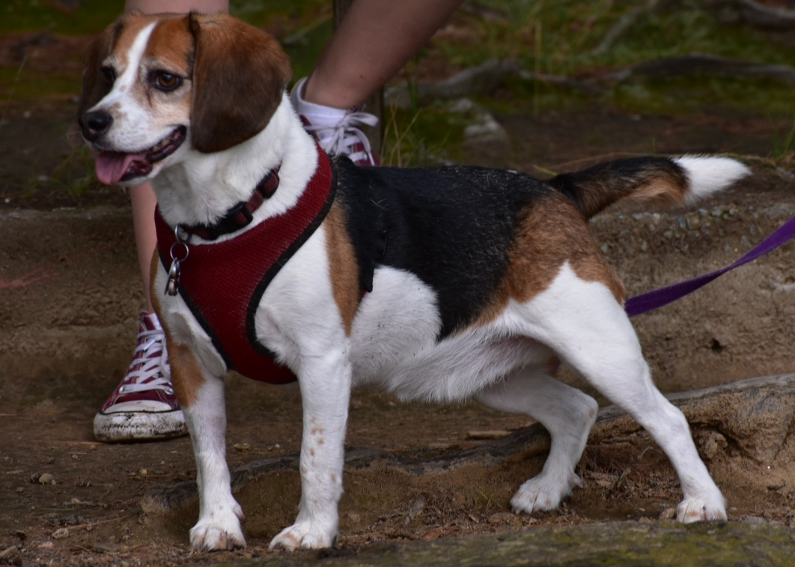

Resume
Smokey Joe, Anthony's Dog
Contact
123 Bark Street
Dogsville, PA 12345
Phone: (555) 123-4567
Email: smokey.joe@example.com

Skills:
Scent Tracking:
- Exceptional ability to track scents and locate objects or individuals.
Communication:
- Proficient in barking, howling, and tail wagging to convey messages effectively.
Team Player:
- Works well with other dogs and humans, fostering a positive and collaborative environment.
Fast Learner
- Quick to grasp new commands and adapt to various environments.
Education:
Pawfect Pets Academy
- Canine Studies Diploma
- Graduated with Honors
Experience
Search and Rescue Specialist
| Dogsville K9 Unit Dogsville, PA |
2020 - Present
- Conducted search and rescue operations, successfully locating missing persons.
- Utilized advanced scent tracking skills to navigate various terrains and environments.
- Collaborated with a team of skilled dogs and handlers to achieve mission objectives.
Security Pawtrol Officer
| Barkington Mall Security Barkington, PA |
2018 - 2020
- Patrolled the mall premises to ensure a safe and secure environment.
- Detected and deterred potential threats through vigilant observation and communication.
- Assisted in crowd control during special events and promotions.
Intern
| Puppy Training Center Puptropolis, PA |
Summer 2017
- Assisted in basic obedience training for puppies.
- Learned and applied positive reinforcement techniques to encourage good behavior.
- Provided support to trainers during classes and individual sessions.